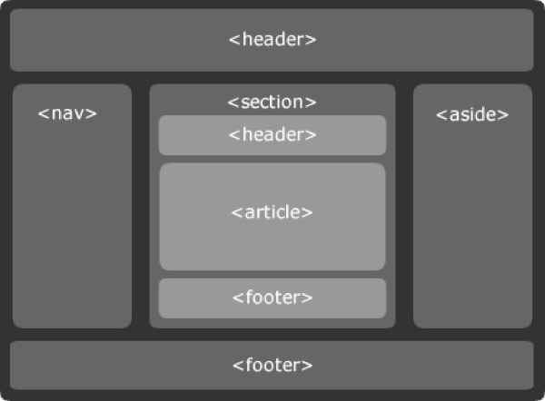

Первое — это стандарт HTML5, документ, лежащий на сайте W3C, в котором описаны все новые теги, атрибуты, новые API, и ряд сопутствующих документов, в которые вынесены некоторые дополнительные детали, вроде API для Canvas.
Второе — это «большой», маркетинговый, трендовый HTML5, зонтик для целого поколения новых технологий, включающий как непосредственно спецификацию HTML5, так и множество модулей CSS3, различные API для JavaScript, да и сам новый стандарт для JavaScript — ECMAScript5.
Что дает HTML5?
Для разработчиков html5 помогает писать понятный семантический код. Позволяет управлять многими процессами на странице своими стандартными методами, без использования javascript или сторонних плагинов и сервисов. Это означает, что решаются некоторые проблемы кроссбраузерности, поскольку браузеры одинаково реализуют новые возможности.
Также html5 делает удобной работу в сети и для обычных пользователей. Например, увеличивается скорость работы, использование браузера становится более удобным. Для того, чтобы смотреть ролики из youtube не нужно устанавливать дополнительные плагины и постоянно обновлять их.
Цели HTML5
Кратко цели html5 можно назвать так:
Ликвидация плагинов, таких как Flash, для общих функций, которые необходимы каждому. Построить собственную поддержку для таких вещей, как аудио, видео и т.д.
Снижение потребности в JavaScript и дополнительном коде, благодаря использованию новых html5 элементов.
Обеспечение согласованности между браузерами и устройствами.
Сделать все это настолько прозрачным, насколько это возможно.
Новые возможности HTML5
Новых функциональных возможностей в html5 очень много. Сегодня даже самые последние версии современных браузеров поддерживают полностью все функции html5. Поэтому в данной статье мы рассмотрим лишь основные возможности html5.
Новые элементы html5
Новые элементы html5 позволяют быстрее создавать разметку для страницы, она становиться проще, более понятна и упрощается процесс отладки. Вот некоторые новые теги:
<header> и <footer>
<aside> для сайдбаров или связного контента
<article> для статей
<section> практически то же, что и div
<audio> и <video> теги позволяют проигрывать видео без плагинов
<audio> и <video> теги позволяют проигрывать видео без плагинов
<audio> и <video> теги позволяют проигрывать видео без плагинов
Наряду с тем, что появились новые теги часть существующих тегов в HTML5 приобретает новое значение. Так, если раньше выбор между i и em (аналогично b и strong) был чаще в пользу более короткого написания, то сегодня это теги с различной смысловой нагрузкой, даже если по умолчанию они имеют одинаковое представление курсивом или жирным начертанием.

Другая часть нововведений касается непосредственно вопросов доступности: здесь, прежде всего, речь идет об aria- и role-атрибутах, позволяющих разметить предназначение и роли контента. Эта информация впоследствии, к примеру, может использоваться программами для чтения с экрана (screen reader).
Заключение
HTML5 делает более комфортным использование интернета для обычных пользователей. Также HTML5 — это объемная мощная технология, которая делает разработку более удобным и приятным занятием. Он на столько огромен, что в одной статье даже не перечислишь всех его возможностей.